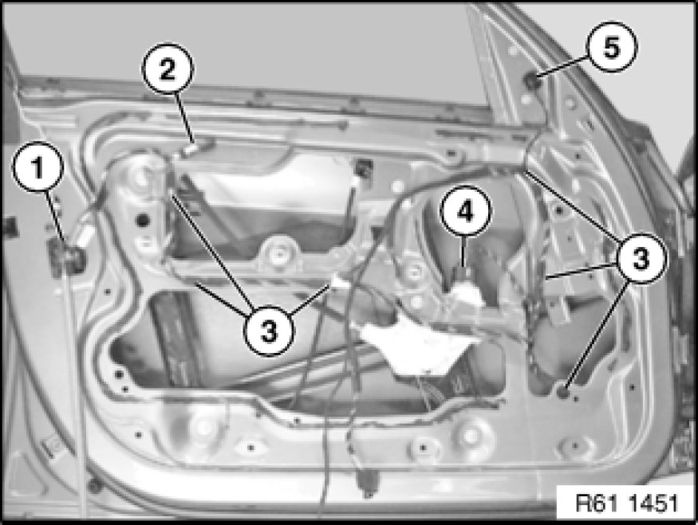
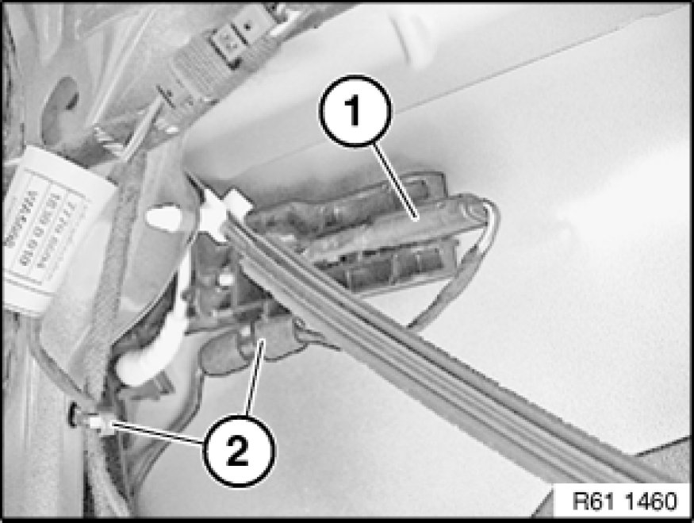
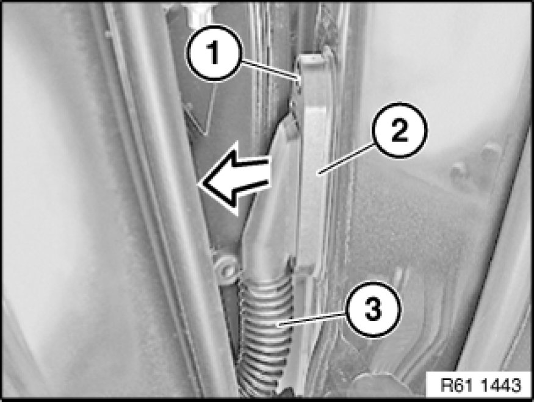

61 12 200 Replacing Wiring Harness In Left or Right Front Door
61 12 200 - Replacing wiring harness in left or right front door

Important!
Read and comply with notes on handling wiring harnesses 61 00 ... Notes on Handling Wiring Harnesses and Cables and cables.

Necessary preliminary tasks:
- Close front side window completely
- Remove front acoustic insulation [1][2]51 48 060 Removing and Installing/Replacing Sound Insulation In Left or Right Front Door
E87:
- Remove door window frame in area of mirror
E81 / E82 / E88:
- Remove corner trim Removing and Installing/Replacing Mirror on Left or Right Front Door

Note:
Work is shown on the E87 by way of example. There may be differences in detail in the case of other vehicle models.
Disconnect plug connection (1) at door lock.
Disconnect plug connection (4) on power window unit.
Disconnect plug connection (2) on outside door handle light.
Disconnect plug connection (5) on door mirror.
If necessary, disconnect plug connection for sensor on front door 65 77 740 Removing and Installing (Replacing) Left Front Door Sensor.
Unclip door wiring harness at points (3).

Equipment with comfort access system:
Disconnect plug connection (1).
Unclip door wiring harness at points (2).

Release screw (1).
Fold door wiring harness plug on A-pillar (2) downwards slightly and remove.
Disconnect plug connection behind.
Pull rubber grommet (3) out of front door.
Feed out door wiring harness towards front to A-pillar and remove.